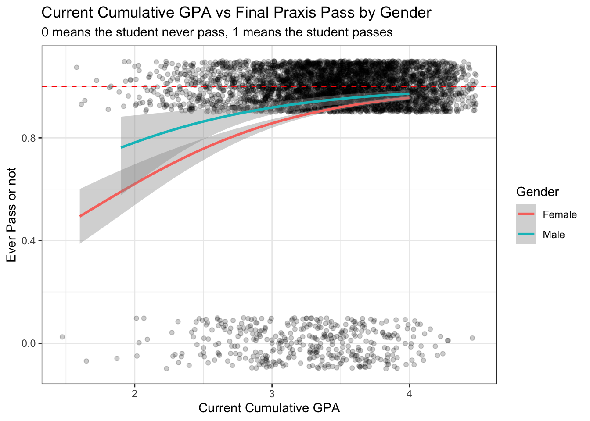
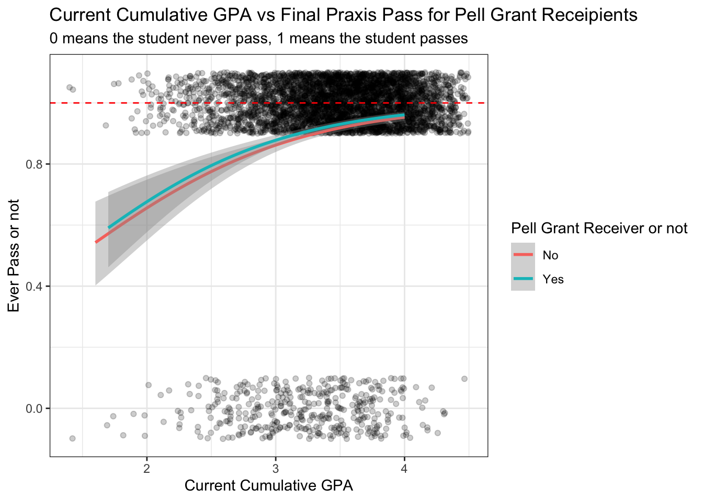
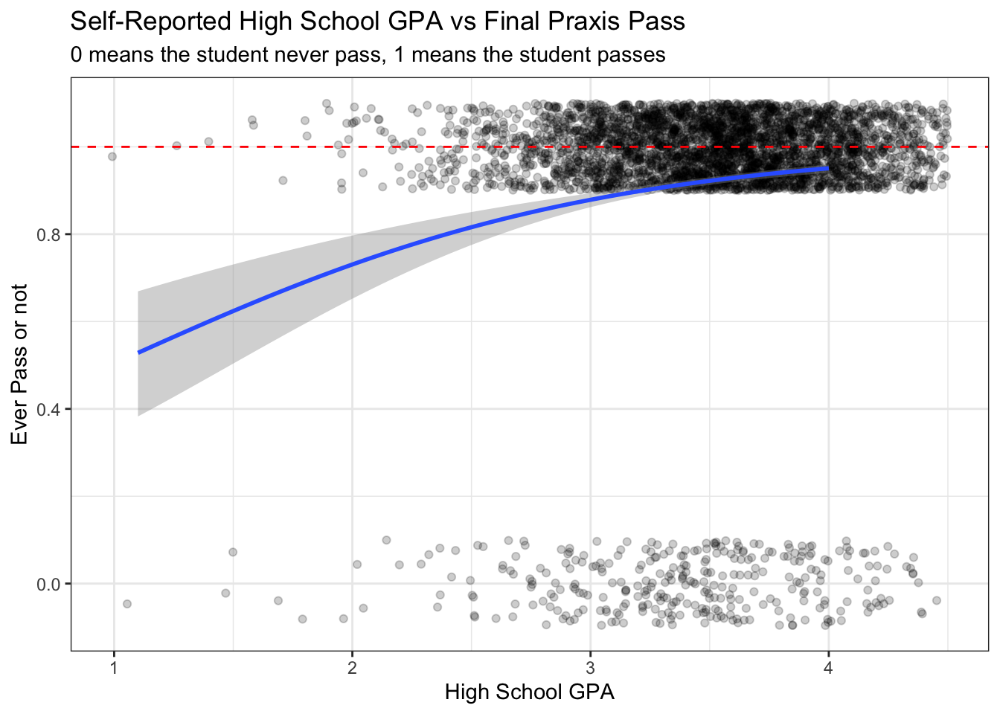
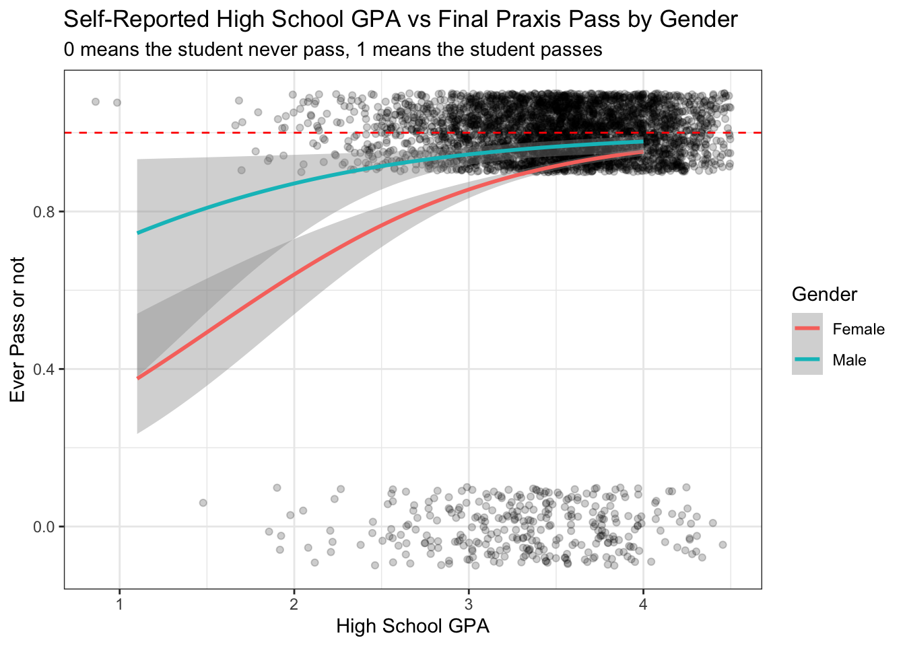
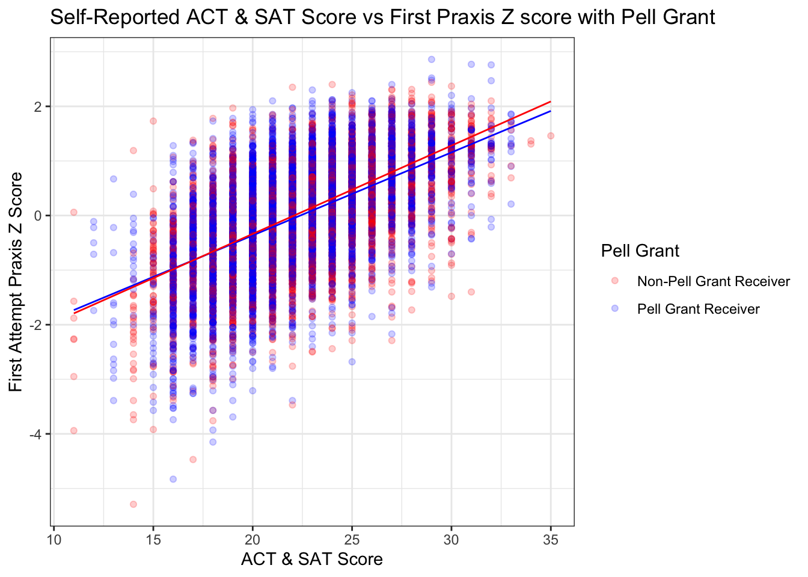

Logistic & Multiple Linear Regression Model for Praxis Scores
portfolio
r
Author
Alice Pao
Published
March 6, 2024
This post is to showcase my statistical analyses for praxis scores collected from students majoring in teacher education at an Idaho higher education institution. This project is part of Benjamin Pacini’s dissertation.
The two research questions we are trying to answer are: 1. What predicts strong teaching? 2. How do measures of success correlate with each other?
In the attempt to answer these two questions, I run logistic and multiple linear regression models using the praxis data set I got. (for its data cleaning and transformation process, please refer to my other blog post)
What Predicts Strong Teaching?
For the following regression models, the target(y) will be different results for praxis scores and the features(x) will be different student demographics.
Regression 1: Target is if a student ever pass praxis test. 0 means fail and 1 means pass.
In total, we have 4695 student subjects. 401 students never passed their praxis tests while 4228 students eventually passed praxis. We have 66 students didn’t indicate whether they passed praxis or not. In all the models I ran, these NAs were omitted.
Does current cumulative college GPA predict if a student eventually passes praxis test or not?
For this model, I set alpha to be 0.05; the following is the result of the model. We see that the p-value for Current Cumulative GPA variable is smaller than 0.05. Therefore, we can make an inference that current cumulative GPA is somewhat useful when it comes to predicting if a student can pass praxis test or not. However, since the AIC score for this model is 2628, it means that this model isn’t the most accurate.
# 1: Logistic Regression Model # Logistic Regression Model: Ever Pass vs CurrentCumGPApraxis_ever_pass <- praxis %>%select(student_id, ever_pass) %>%mutate(student_id =as.character(student_id))praxis_ever_pass <-inner_join(praxis_ever_pass, demo, by =c("student_id"="StudentID"))praxis_ever_pass <- praxis_ever_pass %>%relocate(ever_pass, .before ="student_id") %>%unique()ggplot(data = praxis_ever_pass, aes(x=CurrentCumGPA, y = ever_pass))+geom_jitter(alpha =0.2, width =0.5, height =0.1)+stat_smooth(method='glm', method.args =list(family ="binomial"),formula = y ~ x) +theme_bw()+labs(title ="Current Cumulative GPA vs Final Praxis Pass", subtitle ="0 means the student never pass, 1 means the student passes", y ="Ever Pass or not", x ="Current Cumulative GPA")+geom_hline(yintercept =1, linetype ="dashed", color ="red")
Does current cumulative college GPA by ethnicity predict if a student eventually passes praxis test or not?
For this model, I added ethnicity to be another feature becuase I am curious if ethnicity can contribute to the prediction. The original data has 9 different ethinicity groups; however, for the sake of simplicity, some of them are grouped together.
Here are the final ethnicity groups: * American Indian/Alaskan & Hawaiian, Pacific Islander * Black * Hispanic * Two or more ethnicities * Other & unknown * White
From the table below, none of the variables p-value are smaller than 0.05. The AIC score is 2631.8 which is too high (the lower the AIC score, the more fitted a model is)
Show the code
# Logistic Regression Model: Ever Pass vs CurrentCumGPA & Ethnicityever_pass_ethnicity <- praxis_ever_pass %>%mutate(Ethnicity =case_when(Ethnicity =="American Indian/Alaskan"| Ethnicity =="Hawaiian, Pacific Island"~"American Indian/Alaskan & Hawaiian, Pacific Islander", Ethnicity =="Black"~"Black", Ethnicity =="Hispanic, Latino"~"Hispanic", Ethnicity =="Two or More Ethnicities"~"Two or More Ethnicities", Ethnicity =="Asian"~"Asian", Ethnicity =="Other"| Ethnicity =="Unknown"~"Other & Unknown", Ethnicity =="White"~"White", TRUE~"BLANK"))glm_ever_pass_ethnicity <-glm(ever_pass ~ CurrentCumGPA*Ethnicity, data = ever_pass_ethnicity, family = binomial)summary(glm_ever_pass_ethnicity)
Call:
glm(formula = ever_pass ~ CurrentCumGPA * Ethnicity, family = binomial,
data = ever_pass_ethnicity)
Deviance Residuals:
Min 1Q Median 3Q Max
-2.5459 0.3000 0.3586 0.4535 1.2466
Coefficients:
Estimate Std. Error z value
(Intercept) 1.608195 4.503959 0.357
CurrentCumGPA 0.185392 1.316549 0.141
EthnicityAsian -5.380693 5.210638 -1.033
EthnicityBlack -0.536566 6.189418 -0.087
EthnicityHispanic -2.220342 4.643464 -0.478
EthnicityOther & Unknown -6.103617 5.275097 -1.157
EthnicityTwo or More Ethnicities -2.926444 5.075393 -0.577
EthnicityWhite -3.297413 4.524356 -0.729
CurrentCumGPA:EthnicityAsian 1.408071 1.523489 0.924
CurrentCumGPA:EthnicityBlack 0.006919 1.838659 0.004
CurrentCumGPA:EthnicityHispanic 0.524915 1.361616 0.386
CurrentCumGPA:EthnicityOther & Unknown 1.699049 1.551103 1.095
CurrentCumGPA:EthnicityTwo or More Ethnicities 0.814789 1.505475 0.541
CurrentCumGPA:EthnicityWhite 1.037126 1.322846 0.784
Pr(>|z|)
(Intercept) 0.721
CurrentCumGPA 0.888
EthnicityAsian 0.302
EthnicityBlack 0.931
EthnicityHispanic 0.633
EthnicityOther & Unknown 0.247
EthnicityTwo or More Ethnicities 0.564
EthnicityWhite 0.466
CurrentCumGPA:EthnicityAsian 0.355
CurrentCumGPA:EthnicityBlack 0.997
CurrentCumGPA:EthnicityHispanic 0.700
CurrentCumGPA:EthnicityOther & Unknown 0.273
CurrentCumGPA:EthnicityTwo or More Ethnicities 0.588
CurrentCumGPA:EthnicityWhite 0.433
(Dispersion parameter for binomial family taken to be 1)
Null deviance: 2728.0 on 4628 degrees of freedom
Residual deviance: 2603.8 on 4615 degrees of freedom
(66 observations deleted due to missingness)
AIC: 2631.8
Number of Fisher Scoring iterations: 5
Show the code
ggplot(data = ever_pass_ethnicity, aes(x=CurrentCumGPA, y = ever_pass))+geom_jitter(alpha =0.2, width =0.5, height =0.1)+stat_smooth(method='glm', method.args =list(family ="binomial"),formula = y ~ x, aes(color = Ethnicity)) +theme_bw()+labs(title ="Current Cumulative GPA vs Final Praxis Pass by Student's Ethnicity", subtitle ="0 means the student never pass, 1 means the student passes", y ="Ever Pass or not", x ="Current Cumulative GPA" )
Does current cumulative college GPA by gender predict if a student eventually passes praxis test or not?
This model analyzes if the cumulative college gpa and gender can predict passing praxis test. From the graph, there isn’t any strong indication that gender contribute to this prediction.
Show the code
# Logistic Regression Model: Ever Pass vs CurrentCumGPA & isMaleglm_ever_pass_male <-glm(ever_pass ~ CurrentCumGPA*isMale, data = praxis_ever_pass, family = binomial)ggplot(data = praxis_ever_pass, aes(x=CurrentCumGPA, y = ever_pass))+geom_jitter(alpha =0.2, width =0.5, height =0.1)+stat_smooth(method='glm', method.args =list(family ="binomial"),formula = y ~ x, aes(color =as.factor(isMale))) +theme_bw()+labs(title ="Current Cumulative GPA vs Final Praxis Pass by Gender", subtitle ="0 means the student never pass, 1 means the student passes", y ="Ever Pass or not", x ="Current Cumulative GPA", color ="Gender")+scale_color_discrete(breaks=c("0", "1"),labels=c("Female", "Male"))+geom_hline(yintercept =1, linetype ="dashed", color ="red")
Does current cumulative college GPA with pell grant receiver predict if a student eventually passes praxis test or not?
Show the code
# Logistic Regression Model: Ever Pass vs CurrentCumGPA & ReceivedPellggplot(data = praxis_ever_pass, aes(x=CurrentCumGPA, y = ever_pass))+geom_jitter(alpha =0.2, width =0.5, height =0.1)+stat_smooth(method='glm', method.args =list(family ="binomial"),formula = y ~ x, aes(color =as.factor(ReceivedPell))) +theme_bw()+labs(title ="Current Cumulative GPA vs Final Praxis Pass for Pell Grant Receipients", subtitle ="0 means the student never pass, 1 means the student passes", y ="Ever Pass or not", x ="Current Cumulative GPA", color ="Pell Grant Receiver or not")+scale_color_discrete(breaks=c("0", "1"), labels =c("No", "Yes"))+geom_hline(yintercept =1, linetype ="dashed", color ="red")
Does current cumulative college GPA with returned missionary predict if a student eventually passes praxis test or not?
Show the code
# Logistic Regression Model: Ever Pass vs CurrentCumGPA & ServedMissionggplot(data = praxis_ever_pass, aes(x=CurrentCumGPA, y = ever_pass))+geom_jitter(alpha =0.2, width =0.5, height =0.1)+stat_smooth(method='glm', method.args =list(family ="binomial"),formula = y ~ x, aes(color =as.factor(ServedMission))) +theme_bw()+labs(title ="Current Cumulative GPA vs Final Praxis Pass by Gender", subtitle ="0 means the student never pass, 1 means the student passes", y ="Ever Pass or not", x ="Current Cumulative GPA", color ="Mission")+scale_color_discrete(breaks=c("FALSE", "TRUE"),labels=c("Non-returned Missionary", "Returned Missionary"))+geom_hline(yintercept =1, linetype ="dashed", color ="red")
Does self-reported ACT & SAT score predict if a student eventually passes praxis test or not?
Show the code
# Logistic Regression Model: Ever Pass vs ACTSAT_Scoresglm_ever_pass_ACTSAT <-glm(ever_pass ~ ACTSAT_Scores, data = praxis_ever_pass, family = binomial)ggplot(data = praxis_ever_pass, aes(x=ACTSAT_Scores, y = ever_pass))+geom_jitter(alpha =0.2, width =0.5, height =0.1)+geom_smooth(method ="glm", method.args=list(family=binomial), se=FALSE)+theme_bw()+labs(title ="Self-Reported ACT and SAT Score vs Final Praxis Pass", subtitle ="0 means the student never passes, 1 means the student passes", y ="Ever Pass or not", x ="ACT or SAT Score")
Does self-reported ACT & SAT score by Ethnicity predict if a student eventually passes praxis test or not?
Show the code
# Logistic Regression Model: Ever Pass vs ACTSAT_Scores & Ethnicityglm_ever_pass_ACTSAT_ethnicity <-glm(ever_pass ~ ACTSAT_Scores*Ethnicity, data = praxis_ever_pass, family = binomial)ggplot(data = praxis_ever_pass, aes(x=ACTSAT_Scores, y = ever_pass))+geom_jitter(alpha =0.2, width =0.5, height =0.1)+geom_smooth(method ="glm", method.args=list(family=binomial), se=FALSE, aes(color = Ethnicity))+theme_bw()+labs(title ="Self-Reported ACT and SAT Score vs Final Praxis Pass by Ethnicity", subtitle ="0 means the student never passes, 1 means the student passes", y ="Ever Pass or not", x ="ACT or SAT Score", color ="Ethnicity")
Does self-reported ACT & SAT score by gender predict if a student eventually passes praxis test or not?
Show the code
# Logistic Regression Model: Ever Pass vs ACTSAT_Scores & isMaleglm_ever_pass_ACTSAT_male <-glm(ever_pass ~ ACTSAT_Scores*isMale, data = praxis_ever_pass, family = binomial)ggplot(data = praxis_ever_pass, aes(x=ACTSAT_Scores, y = ever_pass))+geom_jitter(alpha =0.2, width =0.5, height =0.1)+geom_smooth(method ="glm", method.args=list(family=binomial), se=FALSE, aes(color =as.factor(isMale)))+theme_bw()+labs(title ="Self-Reported ACT and SAT Score vs Final Praxis Pass by Gender", subtitle ="0 means the student never passes, 1 means the student passes", y ="Ever Pass or not", x ="ACT or SAT Score", color ="Gender")+scale_color_discrete(breaks=c("0", "1"), labels =c("Female", "Male"))

Does self-reported ACT & SAT score with returned missionary predict if a student eventually passes praxis test or not?
Show the code
# Logistic Regression Model: Ever Pass vs ACTSAT_Scores & ServedMissionggplot(data = praxis_ever_pass, aes(x=ACTSAT_Scores, y = ever_pass))+geom_jitter(alpha =0.2, width =0.5, height =0.1)+stat_smooth(method='glm', method.args =list(family ="binomial"),formula = y ~ x, aes(color =as.factor(ServedMission))) +theme_bw()+labs(title ="Self-Reported ACT and SAT Score vs Final Praxis Pass With Students Serving or Not Serving Mission", subtitle ="0 means the student never pass, 1 means the student passes", y ="Ever Pass or not", x ="ACT or SAT Score", color ="Mission")+scale_color_discrete(breaks=c("FALSE", "TRUE"), labels =c("Non-returned Missionary", "Returned Missionary"))+geom_hline(yintercept =1, linetype ="dashed", color ="red")

Does self-reported ACT & SAT score with pell grant receiver predict if a student eventually passes praxis test or not?
Show the code
# Logistic Regression Model: Ever Pass vs CurrentCumGPA & ReceivedPellglm_ever_pass_pell <-glm(ever_pass ~ CurrentCumGPA*ReceivedPell, data = praxis_ever_pass, family = binomial)ggplot(data = praxis_ever_pass, aes(x=CurrentCumGPA, y = ever_pass))+geom_jitter(alpha =0.2, width =0.5, height =0.1)+geom_smooth(method ="glm", method.args=list(family=binomial), se=FALSE, aes(color =as.factor(ReceivedPell)))+theme_bw()+labs(title ="Current Cumulative GPA vs Final Praxis Pass for Pell Grant Receivers", subtitle ="0 means the student never passes, 1 means the student passes", y ="Ever Pass or not", x ="Current Cumulative GPA", color ="Pell Grant Receiver or not")+scale_color_discrete(breaks=c("0", "1"), labels =c("No", "Yes"))
Does self-reported high school GPA predict if a student eventually passes praxis test or not?
Show the code
# Logistic Regression Model: Ever Pass vs HighSchoolGPA ggplot(data = praxis_ever_pass, aes(x=HighSchoolGPA, y = ever_pass))+geom_jitter(alpha =0.2, width =0.5, height =0.1)+stat_smooth(method='glm', method.args =list(family ="binomial"),formula = y ~ x) +theme_bw()+labs(title ="Self-Reported High School GPA vs Final Praxis Pass", subtitle ="0 means the student never pass, 1 means the student passes", y ="Ever Pass or not", x ="High School GPA")+geom_hline(yintercept =1, linetype ="dashed", color ="red")
Does self-reported high school GPA by ethnicity predict if a student eventually passes praxis test or not?
Show the code
# Logistic Regression Model: Ever Pass vs HighSchoolGPA ggplot(data = praxis_ever_pass, aes(x=HighSchoolGPA, y = ever_pass))+geom_jitter(alpha =0.2, width =0.5, height =0.1)+stat_smooth(method='glm', method.args =list(family ="binomial"),formula = y ~ x, aes(color =as.factor(Ethnicity))) +theme_bw()+labs(title ="Self-Reported ACT and SAT Score vs Final Praxis Pass for Pell Grant Receipients", subtitle ="0 means the student never pass, 1 means the student passes", y ="Ever Pass or not", x ="High School GPA", color ="Pell Grant Receiver or not")+scale_color_discrete(breaks=c("0", "1"), labels =c("No", "Yes"))+geom_hline(yintercept =1, linetype ="dashed", color ="red")
Does self-reported high school GPA by gender predict if a student eventually passes praxis test or not?
Show the code
# Logistic Regression Model: Ever Pass vs HighSchoolGPA & isMaleggplot(data = praxis_ever_pass, aes(x=HighSchoolGPA, y = ever_pass))+geom_jitter(alpha =0.2, width =0.5, height =0.1)+stat_smooth(method='glm', method.args =list(family ="binomial"),formula = y ~ x, aes(color =as.factor(isMale))) +theme_bw()+labs(title ="Self-Reported High School GPA vs Final Praxis Pass by Gender", subtitle ="0 means the student never pass, 1 means the student passes", y ="Ever Pass or not", x ="High School GPA", color ="Gender")+scale_color_discrete(breaks=c("0", "1"),labels=c("Female", "Male"))+geom_hline(yintercept =1, linetype ="dashed", color ="red")
Does self-reported high school GPA with returned missionary predict if a student eventually passes praxis test or not?
Show the code
# Logistic Regression Model: Ever Pass vs HighSchoolGPA & ServedMissionggplot(data = praxis_ever_pass, aes(x=HighSchoolGPA, y = ever_pass))+geom_jitter(alpha =0.2, width =0.5, height =0.1)+stat_smooth(method='glm', method.args =list(family ="binomial"),formula = y ~ x, aes(color =as.factor(ServedMission))) +theme_bw()+labs(title ="Self-Reported High School GPA vs Final Praxis Pass with Returned Missionary", subtitle ="0 means the student never pass, 1 means the student passes", y ="Ever Pass or not", x ="High School GPA", color ="Mission")+scale_color_discrete(breaks=c("FALSE", "TRUE"),labels=c("Non-returned Missionary", "Returned Missionary"))+geom_hline(yintercept =1, linetype ="dashed", color ="red")
Regression 2: Target is a student’s first attempt praxis z score
Does current cumulative college GPA predict a student’s first attempt praxis performance or not?
Does current cumulative college GPA by Ethnicity predict a student’s first attempt praxis performance or not?
Does current cumulative college GPA by Gender predict a student’s first attempt praxis performance or not?
Show the code
# First Praxis Z Score vs CurrentCumGPA & isMalefpz_ccgpa_gender <-lm(first_z_score ~ CurrentCumGPA +as.factor(isMale) + CurrentCumGPA:as.factor(isMale), data = praxis_first_zscore)summary(fpz_ccgpa_gender)
Call:
lm(formula = first_z_score ~ CurrentCumGPA + as.factor(isMale) +
CurrentCumGPA:as.factor(isMale), data = praxis_first_zscore)
Residuals:
Min 1Q Median 3Q Max
-5.1712 -0.5847 0.0738 0.6738 3.2607
Coefficients:
Estimate Std. Error t value Pr(>|t|)
(Intercept) -2.98158 0.08038 -37.093 < 2e-16 ***
CurrentCumGPA 0.84264 0.02267 37.166 < 2e-16 ***
as.factor(isMale)1 0.94587 0.20596 4.592 4.42e-06 ***
CurrentCumGPA:as.factor(isMale)1 -0.20367 0.06098 -3.340 0.000841 ***
---
Signif. codes: 0 '***' 0.001 '**' 0.01 '*' 0.05 '.' 0.1 ' ' 1
Residual standard error: 0.9426 on 13282 degrees of freedom
(13 observations deleted due to missingness)
Multiple R-squared: 0.1028, Adjusted R-squared: 0.1026
F-statistic: 507.5 on 3 and 13282 DF, p-value: < 2.2e-16
Show the code
b <-coef(fpz_ccgpa_gender)ggplot(praxis_first_zscore, aes(y = first_z_score, x = CurrentCumGPA, color =as.factor(isMale)))+geom_point(alpha =0.2)+stat_function(fun =function(x) b[1] + b[2]*x, color ="blue")+#male linestat_function(fun =function(x) (b[1]+b[3]) + (b[2]+b[4])*x, color ="red" )+#female linetheme_bw()+labs(title ="Current Cummulative GPA vs First Praxis Z score By Gender", y ="First Attempt Praxis Z Score", x ="Current Cummulative GPA", color ='Gender')+scale_color_manual(name="Gender", values=c("red","blue"), labels =c('Female', 'Male'))

Does current cumulative college GPA with Pell Grant predict a student’s first attempt praxis performance or not?
Show the code
# First Praxis Z Score vs CurrentCumGPA & isMalefpz_ccgpa_pell <-lm(first_z_score ~ CurrentCumGPA +as.factor(ReceivedPell) + CurrentCumGPA:as.factor(ReceivedPell), data = praxis_first_zscore)summary(fpz_ccgpa_pell)
Call:
lm(formula = first_z_score ~ CurrentCumGPA + as.factor(ReceivedPell) +
CurrentCumGPA:as.factor(ReceivedPell), data = praxis_first_zscore)
Residuals:
Min 1Q Median 3Q Max
-4.8649 -0.5917 0.0704 0.6794 3.1421
Coefficients:
Estimate Std. Error t value Pr(>|t|)
(Intercept) -2.84842 0.10901 -26.130 <2e-16 ***
CurrentCumGPA 0.80779 0.03075 26.272 <2e-16 ***
as.factor(ReceivedPell)1 0.19326 0.14775 1.308 0.191
CurrentCumGPA:as.factor(ReceivedPell)1 -0.04509 0.04190 -1.076 0.282
---
Signif. codes: 0 '***' 0.001 '**' 0.01 '*' 0.05 '.' 0.1 ' ' 1
Residual standard error: 0.9462 on 13282 degrees of freedom
(13 observations deleted due to missingness)
Multiple R-squared: 0.09586, Adjusted R-squared: 0.09566
F-statistic: 469.4 on 3 and 13282 DF, p-value: < 2.2e-16
Show the code
b <-coef(fpz_ccgpa_pell)ggplot(praxis_first_zscore, aes(y = first_z_score, x = CurrentCumGPA, color =as.factor(ReceivedPell)))+geom_point(alpha =0.2)+stat_function(fun =function(x) b[1] + b[2]*x, color ="blue")+#pell linestat_function(fun =function(x) (b[1]+b[3]) + (b[2]+b[4])*x, color ="red" )+#non-pell linetheme_bw()+labs(title ="Current Cummulative GPA vs First Praxis Z score with Pell Grant", y ="First Attempt Praxis Z Score", x ="Current Cummulative GPA", color ='Pell Grant')+scale_color_manual(name="Pell Grant", values=c("red","blue"), labels =c('Non-Pell Grant Receiver', 'Pell Grant Receiver'))
Does current cumulative college GPA with Mission predict a student’s first attempt praxis performance or not?
Show the code
# First Praxis Z Score vs CurrentCumGPA & ServedMissionfpz_ccgpa_mission <-lm(first_z_score ~ CurrentCumGPA + ServedMission + CurrentCumGPA:ServedMission, data = praxis_first_zscore)summary(fpz_ccgpa_mission)
Call:
lm(formula = first_z_score ~ CurrentCumGPA + ServedMission +
CurrentCumGPA:ServedMission, data = praxis_first_zscore)
Residuals:
Min 1Q Median 3Q Max
-4.9636 -0.5897 0.0713 0.6802 3.2199
Coefficients:
Estimate Std. Error t value Pr(>|t|)
(Intercept) -2.770811 0.096865 -28.605 <2e-16 ***
CurrentCumGPA 0.777284 0.027504 28.261 <2e-16 ***
ServedMissionTRUE 0.093717 0.148407 0.631 0.528
CurrentCumGPA:ServedMissionTRUE 0.006287 0.042091 0.149 0.881
---
Signif. codes: 0 '***' 0.001 '**' 0.01 '*' 0.05 '.' 0.1 ' ' 1
Residual standard error: 0.9447 on 13282 degrees of freedom
(13 observations deleted due to missingness)
Multiple R-squared: 0.09874, Adjusted R-squared: 0.09854
F-statistic: 485.1 on 3 and 13282 DF, p-value: < 2.2e-16
Show the code
b <-coef(fpz_ccgpa_mission)ggplot(praxis_first_zscore, aes(y = first_z_score, x = CurrentCumGPA, color = ServedMission))+geom_point(alpha =0.2)+stat_function(fun =function(x) b[1] + b[2]*x, color ="blue")+#non-return missionary linestat_function(fun =function(x) (b[1]+b[3]) + (b[2]+b[4])*x, color ="red" )+#returned missionary linetheme_bw()+labs(title ="Current Cummulative GPA vs First Praxis Z score with Returned Missionary", y ="First Attempt Praxis Z Score", x ="Current Cummulative GPA", color ='Mission')+scale_color_manual(name="Mission", values=c("red","blue"), labels =c('Returned Missionary', 'Non-Returned Missionary'))

Does self-reported ACT and SAT score predict a student’s first attempt praxis performance or not?
Show the code
# First Praxis Z Score vs ACTSAT_Scorefpz_act <-lm(first_z_score ~ ACTSAT_Scores, data = praxis_first_zscore)summary(fpz_act)
Call:
lm(formula = first_z_score ~ ACTSAT_Scores, data = praxis_first_zscore)
Residuals:
Min 1Q Median 3Q Max
-4.0018 -0.5070 0.0451 0.5577 2.8619
Coefficients:
Estimate Std. Error t value Pr(>|t|)
(Intercept) -3.476661 0.049424 -70.34 <2e-16 ***
ACTSAT_Scores 0.156316 0.002176 71.83 <2e-16 ***
---
Signif. codes: 0 '***' 0.001 '**' 0.01 '*' 0.05 '.' 0.1 ' ' 1
Residual standard error: 0.806 on 10809 degrees of freedom
(2488 observations deleted due to missingness)
Multiple R-squared: 0.3231, Adjusted R-squared: 0.323
F-statistic: 5159 on 1 and 10809 DF, p-value: < 2.2e-16
Show the code
ggplot(praxis_first_zscore, aes(y = first_z_score, x = ACTSAT_Scores))+geom_point(alpha =0.2)+geom_smooth(method ="lm", formula = y~x, se =FALSE)+theme_bw()+labs(title ="Self-Reported ACT & SAT Score vs First Praxis Z score", y ="First Attempt Praxis Z Score", x ="ACT & SAT Score")
Does self-reported ACT and SAT score by enthnicity predict a student’s first attempt praxis performance or not?
Show the code
# First Praxis Z Score vs ACTSAT_Score & Ethnicity
Does self-reported ACT and SAT score by enthnicity predict a student’s first attempt praxis performance or not?
Show the code
# First Praxis Z Score vs ACTSAT_Score & isMalefpz_act_gender <-lm(first_z_score ~ ACTSAT_Scores +as.factor(isMale) + ACTSAT_Scores:as.factor(isMale), data = praxis_first_zscore)summary(fpz_act_gender)
Call:
lm(formula = first_z_score ~ ACTSAT_Scores + as.factor(isMale) +
ACTSAT_Scores:as.factor(isMale), data = praxis_first_zscore)
Residuals:
Min 1Q Median 3Q Max
-4.3312 -0.5011 0.0526 0.5469 2.9014
Coefficients:
Estimate Std. Error t value Pr(>|t|)
(Intercept) -3.552710 0.052198 -68.062 < 2e-16 ***
ACTSAT_Scores 0.158755 0.002295 69.164 < 2e-16 ***
as.factor(isMale)1 0.611269 0.157715 3.876 0.000107 ***
ACTSAT_Scores:as.factor(isMale)1 -0.017135 0.007031 -2.437 0.014820 *
---
Signif. codes: 0 '***' 0.001 '**' 0.01 '*' 0.05 '.' 0.1 ' ' 1
Residual standard error: 0.803 on 10807 degrees of freedom
(2488 observations deleted due to missingness)
Multiple R-squared: 0.3281, Adjusted R-squared: 0.3279
F-statistic: 1759 on 3 and 10807 DF, p-value: < 2.2e-16
Show the code
b <-coef(fpz_act_gender)ggplot(praxis_first_zscore, aes(y = first_z_score, x = ACTSAT_Scores, color =as.factor(isMale)))+geom_point(alpha =0.2)+stat_function(fun =function(x) b[1] + b[2]*x, color ="blue")+#male linestat_function(fun =function(x) (b[1]+b[3]) + (b[2]+b[4])*x, color ="red")+#female linetheme_bw()+labs(title ="Self-Reported ACT & SAT Score vs First Praxis Z score by Gender", y ="First Attempt Praxis Z Score", x ="ACT & SAT Score", color ='Gender')+scale_color_manual(name="Gender", values=c("red","blue"), labels =c('Female', 'Male'))
Does self-reported ACT and SAT score by gender predict a student’s first attempt praxis performance or not?
Show the code
# First Praxis Z Score vs ACTSAT_Score & isMalefpz_act_gender <-lm(first_z_score ~ ACTSAT_Scores +as.factor(isMale) + ACTSAT_Scores:as.factor(isMale), data = praxis_first_zscore)summary(fpz_act_gender)
Call:
lm(formula = first_z_score ~ ACTSAT_Scores + as.factor(isMale) +
ACTSAT_Scores:as.factor(isMale), data = praxis_first_zscore)
Residuals:
Min 1Q Median 3Q Max
-4.3312 -0.5011 0.0526 0.5469 2.9014
Coefficients:
Estimate Std. Error t value Pr(>|t|)
(Intercept) -3.552710 0.052198 -68.062 < 2e-16 ***
ACTSAT_Scores 0.158755 0.002295 69.164 < 2e-16 ***
as.factor(isMale)1 0.611269 0.157715 3.876 0.000107 ***
ACTSAT_Scores:as.factor(isMale)1 -0.017135 0.007031 -2.437 0.014820 *
---
Signif. codes: 0 '***' 0.001 '**' 0.01 '*' 0.05 '.' 0.1 ' ' 1
Residual standard error: 0.803 on 10807 degrees of freedom
(2488 observations deleted due to missingness)
Multiple R-squared: 0.3281, Adjusted R-squared: 0.3279
F-statistic: 1759 on 3 and 10807 DF, p-value: < 2.2e-16
Show the code
b <-coef(fpz_act_gender)ggplot(praxis_first_zscore, aes(y = first_z_score, x = ACTSAT_Scores, color =as.factor(isMale)))+geom_point(alpha =0.2)+stat_function(fun =function(x) b[1] + b[2]*x, color ="blue")+#male linestat_function(fun =function(x) (b[1]+b[3]) + (b[2]+b[4])*x, color ="red")+#female linetheme_bw()+labs(title ="Self-Reported ACT & SAT Score vs First Praxis Z score by Gender", y ="First Attempt Praxis Z Score", x ="ACT & SAT Score", color ='Gender')+scale_color_manual(name="Gender", values=c("red","blue"), labels =c('Female', 'Male'))
Does self-reported ACT and SAT score with pell grant predict a student’s first attempt praxis performance or not?
Show the code
# First Praxis Z Score vs ACTSAT_Score & ReceivedPellfpz_act_pell <-lm(first_z_score ~ ACTSAT_Scores +as.factor(ReceivedPell) + ACTSAT_Scores:as.factor(ReceivedPell), data = praxis_first_zscore)summary(fpz_act_pell)
Call:
lm(formula = first_z_score ~ ACTSAT_Scores + as.factor(ReceivedPell) +
ACTSAT_Scores:as.factor(ReceivedPell), data = praxis_first_zscore)
Residuals:
Min 1Q Median 3Q Max
-4.0139 -0.5054 0.0542 0.5570 2.8541
Coefficients:
Estimate Std. Error t value Pr(>|t|)
(Intercept) -3.404246 0.070125 -48.545 <2e-16
ACTSAT_Scores 0.152008 0.003055 49.759 <2e-16
as.factor(ReceivedPell)1 -0.168462 0.099016 -1.701 0.0889
ACTSAT_Scores:as.factor(ReceivedPell)1 0.009776 0.004361 2.242 0.0250
(Intercept) ***
ACTSAT_Scores ***
as.factor(ReceivedPell)1 .
ACTSAT_Scores:as.factor(ReceivedPell)1 *
---
Signif. codes: 0 '***' 0.001 '**' 0.01 '*' 0.05 '.' 0.1 ' ' 1
Residual standard error: 0.8055 on 10807 degrees of freedom
(2488 observations deleted due to missingness)
Multiple R-squared: 0.3241, Adjusted R-squared: 0.3239
F-statistic: 1727 on 3 and 10807 DF, p-value: < 2.2e-16
Show the code
b <-coef(fpz_act_pell)ggplot(praxis_first_zscore, aes(y = first_z_score, x = ACTSAT_Scores, color =as.factor(ReceivedPell)))+geom_point(alpha =0.2)+stat_function(fun =function(x) b[1] + b[2]*x, color ="blue")+#pell linestat_function(fun =function(x) (b[1]+b[3]) + (b[2]+b[4])*x, color ="red")+#non-pell linetheme_bw()+labs(title ="Self-Reported ACT & SAT Score vs First Praxis Z score with Pell Grant", y ="First Attempt Praxis Z Score", x ="ACT & SAT Score", color ='Pell Grant')+scale_color_manual(name="Pell Grant", values=c("red","blue"), labels =c('Non-Pell Grant Receiver', 'Pell Grant Receiver'))
Does self-reported ACT and SAT score with mission predict a student’s first attempt praxis performance or not?
Show the code
# First Praxis Z Score vs ACTSAT_Score & ServedMissionfpz_act_mission <-lm(first_z_score ~ ACTSAT_Scores +as.factor(ServedMission) + ACTSAT_Scores:as.factor(ServedMission), data = praxis_first_zscore)summary(fpz_act_mission)
Call:
lm(formula = first_z_score ~ ACTSAT_Scores + as.factor(ServedMission) +
ACTSAT_Scores:as.factor(ServedMission), data = praxis_first_zscore)
Residuals:
Min 1Q Median 3Q Max
-4.1337 -0.5052 0.0495 0.5499 2.9427
Coefficients:
Estimate Std. Error t value
(Intercept) -3.646186 0.065463 -55.699
ACTSAT_Scores 0.162232 0.002901 55.925
as.factor(ServedMission)TRUE 0.425542 0.099743 4.266
ACTSAT_Scores:as.factor(ServedMission)TRUE -0.014777 0.004381 -3.373
Pr(>|t|)
(Intercept) < 2e-16 ***
ACTSAT_Scores < 2e-16 ***
as.factor(ServedMission)TRUE 2e-05 ***
ACTSAT_Scores:as.factor(ServedMission)TRUE 0.000747 ***
---
Signif. codes: 0 '***' 0.001 '**' 0.01 '*' 0.05 '.' 0.1 ' ' 1
Residual standard error: 0.8043 on 10807 degrees of freedom
(2488 observations deleted due to missingness)
Multiple R-squared: 0.326, Adjusted R-squared: 0.3258
F-statistic: 1742 on 3 and 10807 DF, p-value: < 2.2e-16
Show the code
b <-coef(fpz_act_mission)ggplot(praxis_first_zscore, aes(y = first_z_score, x = ACTSAT_Scores, color =as.factor(ServedMission)))+geom_point(alpha =0.2)+stat_function(fun =function(x) b[1] + b[2]*x, color ="blue")+#non-returned missionary linestat_function(fun =function(x) (b[1]+b[3]) + (b[2]+b[4])*x, color ="red")+#returned missionary linetheme_bw()+labs(title ="Self-Reported ACT & SAT Score vs First Praxis Z score with Mission", y ="First Attempt Praxis Z Score", x ="ACT & SAT Score", color ='Mission')+scale_color_manual(name="Mission", values=c("red","blue"), labels =c('Rerturned Missionary', 'Non-Returned Missionary'))
Does self-reported high school GPA predict a student’s first attempt praxis performance or not?
Show the code
# First Praxis Z Score vs HigSchoolGPAfpz_high <-lm(first_z_score ~ HighSchoolGPA, data = praxis_first_zscore)summary(fpz_high)
Call:
lm(formula = first_z_score ~ HighSchoolGPA, data = praxis_first_zscore)
Residuals:
Min 1Q Median 3Q Max
-4.8722 -0.6023 0.0776 0.6876 2.5878
Coefficients:
Estimate Std. Error t value Pr(>|t|)
(Intercept) -2.44834 0.08199 -29.86 <2e-16 ***
HighSchoolGPA 0.70019 0.02316 30.24 <2e-16 ***
---
Signif. codes: 0 '***' 0.001 '**' 0.01 '*' 0.05 '.' 0.1 ' ' 1
Residual standard error: 0.9452 on 11196 degrees of freedom
(2101 observations deleted due to missingness)
Multiple R-squared: 0.0755, Adjusted R-squared: 0.07542
F-statistic: 914.3 on 1 and 11196 DF, p-value: < 2.2e-16
Show the code
ggplot(praxis_first_zscore, aes(y = first_z_score, x = HighSchoolGPA))+geom_point(alpha =0.2)+geom_smooth(method ="lm", formula = y~x, se =FALSE)+theme_bw()+labs(title ="Self-Reported High School GPA vs First Praxis Z score", y ="First Attempt Praxis Z Score", x ="High School GPA")
Does self-reported high school GPA by ethnicity predict a student’s first attempt praxis performance or not?
Show the code
# First Praxis Z Score vs HigSchoolGPA & Ethnicity
Does self-reported high school GPA by gender predict a student’s first attempt praxis performance or not?
Show the code
# First Praxis Z Score vs HighSchoolGPA & isMalefpz_high_gender <-lm(first_z_score ~ HighSchoolGPA +as.factor(isMale) + HighSchoolGPA:as.factor(isMale), data = praxis_first_zscore)summary(fpz_high_gender)
Call:
lm(formula = first_z_score ~ HighSchoolGPA + as.factor(isMale) +
HighSchoolGPA:as.factor(isMale), data = praxis_first_zscore)
Residuals:
Min 1Q Median 3Q Max
-5.2577 -0.5948 0.0803 0.6798 2.4870
Coefficients:
Estimate Std. Error t value Pr(>|t|)
(Intercept) -2.89313 0.09164 -31.570 < 2e-16 ***
HighSchoolGPA 0.81654 0.02569 31.786 < 2e-16 ***
as.factor(isMale)1 1.49863 0.21864 6.854 7.55e-12 ***
HighSchoolGPA:as.factor(isMale)1 -0.34682 0.06584 -5.267 1.41e-07 ***
---
Signif. codes: 0 '***' 0.001 '**' 0.01 '*' 0.05 '.' 0.1 ' ' 1
Residual standard error: 0.9386 on 11194 degrees of freedom
(2101 observations deleted due to missingness)
Multiple R-squared: 0.08848, Adjusted R-squared: 0.08824
F-statistic: 362.2 on 3 and 11194 DF, p-value: < 2.2e-16
Show the code
b <-coef(fpz_high_gender)ggplot(praxis_first_zscore, aes(y = first_z_score, x = HighSchoolGPA, color =as.factor(isMale)))+geom_point(alpha =0.2)+stat_function(fun =function(x) b[1] + b[2]*x, color ="blue")+#male linestat_function(fun =function(x) (b[1]+b[3]) + (b[2]+b[4])*x, color ="red")+#female linetheme_bw()+labs(title ="Self-Reported High School GPA vs First Praxis Z score by Gender", y ="First Attempt Praxis Z Score", x ="High School GPA", color ='Gender')+scale_color_manual(name="Gender", values=c("red","blue"), labels =c('Female', 'Male'))
Does self-reported high school GPA with pell grant predict a student’s first attempt praxis performance or not?
Show the code
# First Praxis Z Score vs HighSchoolGPA & ReceivedPellfpz_high_pell <-lm(first_z_score ~ HighSchoolGPA +as.factor(ReceivedPell) + HighSchoolGPA:as.factor(ReceivedPell), data = praxis_first_zscore)summary(fpz_high_pell)
Call:
lm(formula = first_z_score ~ HighSchoolGPA + as.factor(ReceivedPell) +
HighSchoolGPA:as.factor(ReceivedPell), data = praxis_first_zscore)
Residuals:
Min 1Q Median 3Q Max
-4.9050 -0.5988 0.0731 0.6848 2.6215
Coefficients:
Estimate Std. Error t value Pr(>|t|)
(Intercept) -2.28354 0.11872 -19.235 <2e-16 ***
HighSchoolGPA 0.65468 0.03346 19.565 <2e-16 ***
as.factor(ReceivedPell)1 -0.31451 0.16417 -1.916 0.0554 .
HighSchoolGPA:as.factor(ReceivedPell)1 0.08694 0.04636 1.875 0.0608 .
---
Signif. codes: 0 '***' 0.001 '**' 0.01 '*' 0.05 '.' 0.1 ' ' 1
Residual standard error: 0.9451 on 11194 degrees of freedom
(2101 observations deleted due to missingness)
Multiple R-squared: 0.07581, Adjusted R-squared: 0.07556
F-statistic: 306.1 on 3 and 11194 DF, p-value: < 2.2e-16
Show the code
b <-coef(fpz_high_pell)ggplot(praxis_first_zscore, aes(y = first_z_score, x = HighSchoolGPA, color =as.factor(ReceivedPell)))+geom_point(alpha =0.2)+stat_function(fun =function(x) b[1] + b[2]*x, color ="blue")+#pell linestat_function(fun =function(x) (b[1]+b[3]) + (b[2]+b[4])*x, color ="red")+#non-pell linetheme_bw()+labs(title ="Self-Reported High School GPA vs First Praxis Z score with Pell Grant", y ="First Attempt Praxis Z Score", x ="High School GPA", color ='Pell Grant')+scale_color_manual(name="Pell Grant", values=c("red","blue"), labels =c('Non-Pell Grant Receiver', 'Pell Grant Receiver'))

Does self-reported high school GPA with mission predict a student’s first attempt praxis performance or not?
Show the code
# First Praxis Z Score vs HighSchoolGPA & ServedMissionfpz_high_mission <-lm(first_z_score ~ HighSchoolGPA +as.factor(ServedMission) + HighSchoolGPA:as.factor(ServedMission), data = praxis_first_zscore)summary(fpz_high_mission)
Call:
lm(formula = first_z_score ~ HighSchoolGPA + as.factor(ServedMission) +
HighSchoolGPA:as.factor(ServedMission), data = praxis_first_zscore)
Residuals:
Min 1Q Median 3Q Max
-5.0274 -0.5881 0.0716 0.6867 2.5106
Coefficients:
Estimate Std. Error t value Pr(>|t|)
(Intercept) -2.84446 0.11033 -25.782 < 2e-16
HighSchoolGPA 0.79440 0.03107 25.569 < 2e-16
as.factor(ServedMission)TRUE 0.83790 0.16414 5.105 3.37e-07
HighSchoolGPA:as.factor(ServedMission)TRUE -0.19303 0.04641 -4.160 3.21e-05
(Intercept) ***
HighSchoolGPA ***
as.factor(ServedMission)TRUE ***
HighSchoolGPA:as.factor(ServedMission)TRUE ***
---
Signif. codes: 0 '***' 0.001 '**' 0.01 '*' 0.05 '.' 0.1 ' ' 1
Residual standard error: 0.9413 on 11194 degrees of freedom
(2101 observations deleted due to missingness)
Multiple R-squared: 0.08321, Adjusted R-squared: 0.08296
F-statistic: 338.7 on 3 and 11194 DF, p-value: < 2.2e-16
Show the code
b <-coef(fpz_high_mission)ggplot(praxis_first_zscore, aes(y = first_z_score, x = HighSchoolGPA, color =as.factor(ServedMission)))+geom_point(alpha =0.2)+stat_function(fun =function(x) b[1] + b[2]*x, color ="blue")+#non-returned missionary linestat_function(fun =function(x) (b[1]+b[3]) + (b[2]+b[4])*x, color ="red")+#returned missionary linetheme_bw()+labs(title ="Self-Reported High School GPA vs First Praxis Z score with Mission", y ="First Attempt Praxis Z Score", x ="High School GPA", color ='Mission')+scale_color_manual(name="Mission", values=c("red","blue"), labels =c('Rerturned Missionary', 'Non-Returned Missionary'))
Regression 3: Target is a student’s last attempt praxis z score
Regression 4: Target is a student’s last attempt score points from the state’s passing standard